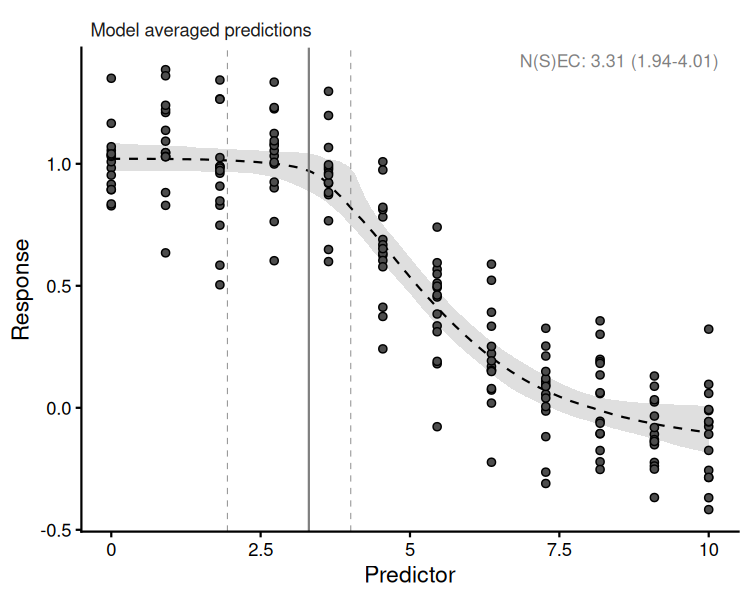
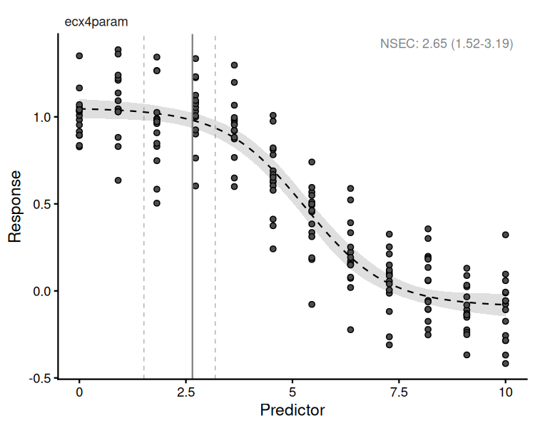
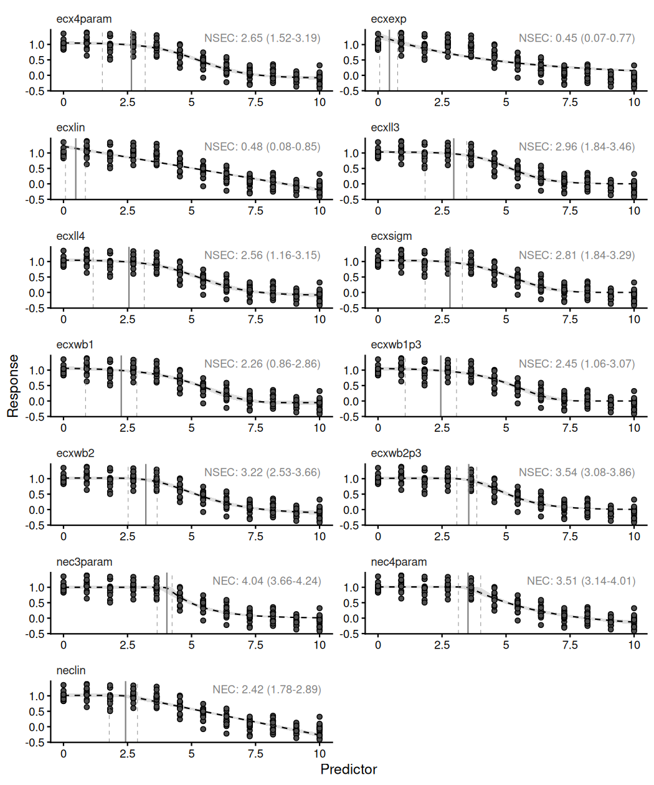
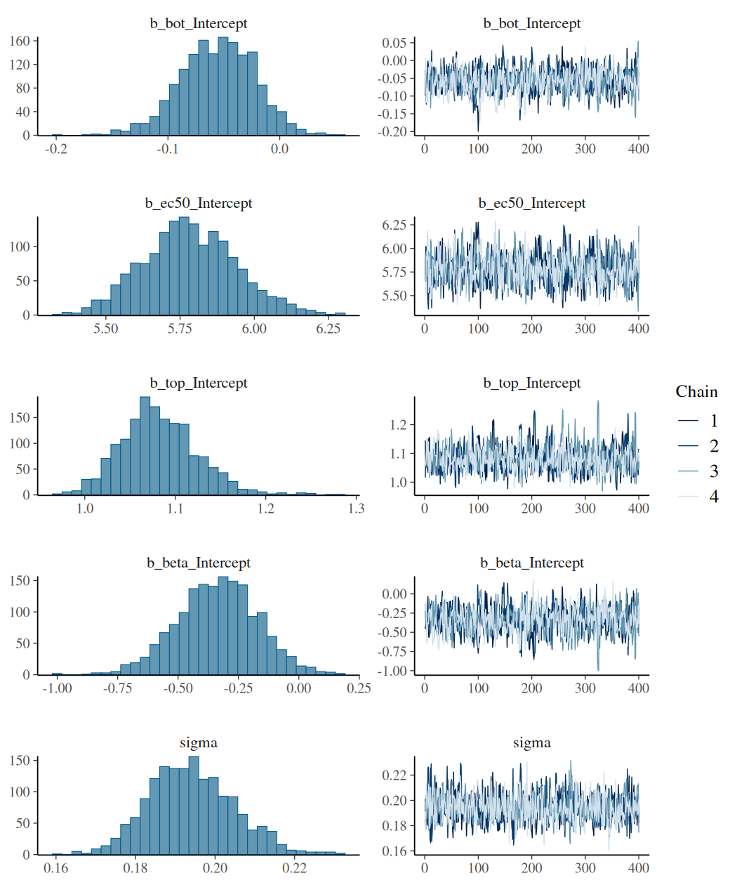
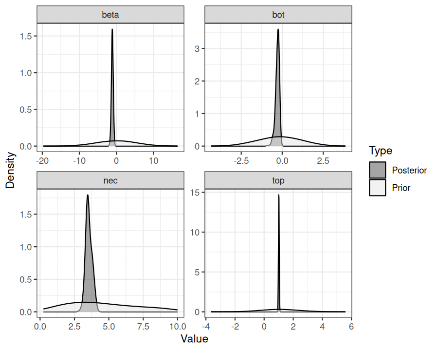
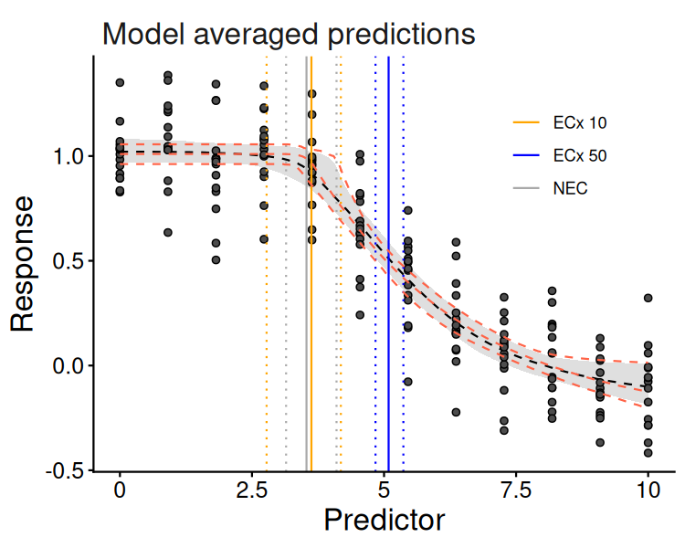

bayesnec
The background of bayesnec is covered in the Single
model usage vignette. Here we explain multi model usage using
bayesnec. In bayesnec it is possible to fit a
custom model set, specific model set, or all of the available models.
When multiple models are specified the bnec function
returns a model weighted estimate of predicted posterior values, based
on the "pseudobma" using Bayesian bootstrap through
loo_model_weights (Vehtari et al.
2026, 2017). These are reasonably analogous to the way model
weights are generated using AIC or AICc (Burnham
and Anderson 2002).
It is also possible to obtain all individual model fits from the
fitted bayesnecfit model object if required using the
pull_out function, and also to update an existing model fit
with additional models, or to drop models using the function
amend.
Multi-model inference can be useful where there are a range of
plausible models that could be used (Burnham and
Anderson 2002) and has been recently adopted in ecotoxicology for
Species Sensitivity Distribution (SSD) model inference (Thorley et al. 2026). The approach may have
considerable value in concentration-response modelling because there is
often no a priori knowledge of the functional form that the
response relationship should take. In this case model averaging can be a
useful way of allowing the data to drive the model selection process,
with weights proportional to how well the individual models fits the
data. Well-fitting models will have high weights, dominating the model
averaged outcome. Conversely, poorly fitting models will have very low
model weights and will therefore have little influence on the outcome.
Where multiple models fit the data equally well, these can equally
influence the outcome, and the resultant posterior predictions reflect
that model uncertainty. It is possible to specify the
"stacking" method (Yao et al.
2018) for model weights if desired (through the argument
loo_controls) which aims to minimise prediction error. We
do not currently recommend using stacking weights given the typical
sample sizes associated with most concentration—response experiments,
and because the main motivation for model averaging within the
bayesnec package is to properly capture model uncertainty
rather than reduce prediction error.
bnec function
bnec model
So far we have explored how to fit individual models via the function
bnec. The bayesnec package also has the
capacity to fit a custom selection of models, pre-specified sets of
models, or even all the available models in the package. Note that as
these are Bayesian methods requiring multiple Hamiltonian Monte Carlo
(HMC) chains, using bnec can be very slow when specifying
models = "all" within a bayesnecformula. See
details under ?bnec for more information on the models, and
model sets that can be specified, as well as the Model
details vignette which contains considerable information on the
available models in bnec and their appropriate usage. In
general it is safe to call models = "all", because by
default bnec will discard invalid models and the model
averaging approach should result in an overall fit that reflects the
models that best fit the data. However, because the HMC can be slow for
models = "all" we do recommend testing your fit using a
single (likely) model in the first instance, to make sure there are no
issues with dispersion, the appropriate distribution is selected and
model fitting appears robust (see the Single
model usage vignette for more details).
To run this vignette, we will need the ggplot2
package:
library(bayesnec)
# function which generates an "ecx4param" model
make_ecx_data <- function(top, bot, ec50, beta, x) {
top + (bot - top) / (1 + exp((ec50 - x) * exp(beta)))
}
x <- seq(0, 10, length = 12)
y <- make_ecx_data(x = x, bot = 0, top = 1, beta = 0.5, ec50 = 5)
set.seed(333)
df_ <- data.frame(x = rep(x, 15), y = rnorm(15 * length(x), y, 0.2))
exp_5 <- bnec(y ~ crf(x, model = "decline"), data = df_, iter = 2e3,
cores = getOption("mc.cores", 1))Here we run bnec using model = "decline"
using a simulated data example for a Beta-distributed response variable.
We are using the "decline" set here because we are not
going to consider hormesis (these allow an initial increase in the
response), largely to save time in fitting this example. Moreover, you
might want to consider saving the output as an .RData
file—doing so can be a useful way of fitting large model sets (ie
model = "all", or model = "decline") at a
convenient time (this can be very slow, and may be run overnight for
example) so you can reload them later to explore, plot, extract values,
and amend the model set as required.
Whenever the model argument of crf is a
model set, or a concatenation of specific models, bnec will
return an object of class bayesmanecfit.
bayesmanecfit model
We have created some plotting method functions for both the
bayesnecfit and bayesmanecfit model fits, so
we can plot a bayesmanecfit model object simply with
autoplot.
autoplot(exp_5)
plot of chunk exmp2-decline
The default plot looks exactly the same as our regular
bayesnecfit plot, but the output is based on a weighted
average of all the model fits in the model = "decline"
model set that were able to fit successfully using the default
bnec settings. Because the model set contains a mix of
NEC and ECx models, no-effect toxicity estimate
reported by default on this plot (and in the summary output below) is
reported as a N(S)EC (see Fisher et al.
(2023)).
The fitted bayesmanecfit object contains different
elements to the bayesnecfit. In particular,
mod_stats contains the table of model fit statistics for
all the fitted models. This includes the model name, the WAIC (as
returned from brms), wi (the model weight, currently
defaulting to "pseudobma" using Bayesian bootstrap from
loo), and the dispersion estimates (only reported if
response is modelled with a Poisson or Binomial distribution, otherwise
NA).
exp_5$mod_stats
#> model waic wi dispersion_Estimate dispersion_Q2.5 dispersion_Q97.5
#> nec3param nec3param -72.14396 2.148698e-02 NA NA NA
#> nec4param nec4param -84.95172 3.950980e-01 NA NA NA
#> neclin neclin -52.29203 8.972298e-04 NA NA NA
#> ecxlin ecxlin -26.28965 4.647118e-07 NA NA NA
#> ecxexp ecxexp 65.94475 7.877696e-25 NA NA NA
#> ecxsigm ecxsigm -77.63117 3.594643e-02 NA NA NA
#> ecx4param ecx4param -81.86810 9.735072e-02 NA NA NA
#> ecxwb1 ecxwb1 -75.21155 1.214995e-02 NA NA NA
#> ecxwb2 ecxwb2 -85.06792 2.791782e-01 NA NA NA
#> ecxwb1p3 ecxwb1p3 -74.45185 1.508941e-02 NA NA NA
#> ecxwb2p3 ecxwb2p3 -77.25285 4.235898e-02 NA NA NA
#> ecxll4 ecxll4 -81.18987 7.016793e-02 NA NA NA
#> ecxll3 ecxll3 -77.20556 3.027576e-02 NA NA NA
#> dispersion_P_over_1
#> nec3param NA
#> nec4param NA
#> neclin NA
#> ecxlin NA
#> ecxexp NA
#> ecxsigm NA
#> ecx4param NA
#> ecxwb1 NA
#> ecxwb2 NA
#> ecxwb1p3 NA
#> ecxwb2p3 NA
#> ecxll4 NA
#> ecxll3 NAWe can obtain a neater summary of the model fit by using the
summary method for a bayesmanecfit object. A
list of fitted models, and model weights are provided. In addition, the
model averaged no-effect estimate is reported, in this case as an
N(S)EC. For this example the nec4param and
ecxwb2 models have the highest weights.
All these model fits are satisfactory despite the relatively low number of iterations set in our example, but the summary would also include a warning if there were fits with divergent transitions.
summary(exp_5)
#> Object of class bayesmanecfit
#>
#> Family: gaussian
#> Links: mu = identity
#>
#> Number of posterior draws per model: 1600
#>
#> Model weights (Method: pseudobma_bb_weights):
#> waic wi
#> nec3param -72.14 0.02
#> nec4param -84.95 0.40
#> neclin -52.29 0.00
#> ecxlin -26.29 0.00
#> ecxexp 65.94 0.00
#> ecxsigm -77.63 0.04
#> ecx4param -81.87 0.10
#> ecxwb1 -75.21 0.01
#> ecxwb2 -85.07 0.28
#> ecxwb1p3 -74.45 0.02
#> ecxwb2p3 -77.25 0.04
#> ecxll4 -81.19 0.07
#> ecxll3 -77.21 0.03
#>
#>
#> Summary of weighted N(S)EC posterior estimates:
#> NB: Model set contains a combination of ECx and NEC
#> models, and is therefore a model averaged
#> combination of NEC and NSEC estimates.
#> Estimate Q2.5 Q97.5
#> N(S)EC 3.31 1.94 4.01
#>
#>
#> Bayesian R2 estimates:
#> Estimate Est.Error Q2.5 Q97.5
#> nec3param 0.83 0.01 0.81 0.85
#> nec4param 0.86 0.01 0.84 0.87
#> neclin 0.83 0.01 0.80 0.84
#> ecxlin 0.80 0.01 0.77 0.82
#> ecxexp 0.61 0.03 0.55 0.65
#> ecxsigm 0.84 0.01 0.82 0.85
#> ecx4param 0.85 0.01 0.84 0.87
#> ecxwb1 0.85 0.01 0.83 0.86
#> ecxwb2 0.86 0.01 0.84 0.87
#> ecxwb1p3 0.84 0.01 0.82 0.85
#> ecxwb2p3 0.84 0.01 0.82 0.85
#> ecxll4 0.85 0.01 0.84 0.87
#> ecxll3 0.84 0.01 0.82 0.85
#>
#>
#> 1 model(s) failed to fit: ecxll5
#> See ?failed_models for the priors and initial values used.The bayesmanecfit object also contains all of the
individual brms model fits, which can be extracted using
the pull_out function. For example, we can pull out and
plot the model ecx4param.

plot of chunk exmp2-ecx4param
This would extract the nec4param model from the
bayesmanecfit and create a new object of class
bayesnecfit which contains just a single fit. This would be
identical to fitting the ecx4param as a single model
using bnec. All of the models in the
bayesmanecfit can be simultaneously plotted using the
argument all_models = TRUE.
autoplot(exp_5, all_models = TRUE)
plot of chunk exmp2-allmods
You can see that some of these models represent very bad fits, and accordingly have extremely low model weights, such as the ecxlin and neclin models in this example. There is no harm in leaving in poor models with low weight, precisely because they have such a low model weight and therefore will not influence posterior predictions. However, it is important to assess the adequacy of model fits of all models, because a poor fit may be more to do with a model that has not converged.
We can assess the chains for one of the higher weighted models to make sure they show good convergence. It is good practice to do this for all models with a high weight, as these are the models most influencing the multi-model inference.
plot(pull_brmsfit(exp_5, "ecxwb1"))
plot of chunk exmp2-goodmod
Assessing chains for all the models in bayesmanecfit
does not work as well using the default brms plotting
method. Instead use check_chains and make sure to pass a
filename argument, which means plots are automatically
saved to pdf with a message.
check_chains(exp_5, filename = "example_5_all_chains")We can also make a plot to compare the posterior probability density
to that of the prior using the check_priors function, for
an individual model fit, but also saving all fits to a file in the
working directory.
check_priors(pull_out(exp_5, "nec4param"))
plot of chunk exmp2-checkpriors
check_priors(exp_5, filename = "example_5_all_priors")Where a large number of models are failing to converge, obviously it
would be better to adjust iter and warmup in
the bnec call, as well as some of the other arguments to
brms such as adapt_delta. See the
?brm documentation for more details. It is possible to
investigate if models from a bayesmanecfit class achieved
convergence according to Rhat:
rhat(exp_5) |>
sapply("[[", "failed")
#> nec3param nec4param neclin ecxlin ecxexp ecxsigm ecx4param ecxwb1 ecxwb2 ecxwb1p3 ecxwb2p3
#> FALSE TRUE FALSE FALSE FALSE FALSE FALSE FALSE FALSE FALSE FALSE
#> ecxll4 ecxll3
#> TRUE FALSEThe default cut off is 1.01, following Vehtari
et al. (2021), whose recommendation is that Rhat should not
exceed 1.01 at convergence. Any model returning TRUE here
did not converge, and should be dropped before the set is averaged —
note that we have also used far fewer than the default
bayesnec iter (10,000) here, which makes
convergence harder than it would usually be.
The older and more permissive 1.05 is still available by changing the argument, which is useful mainly for comparison against analyses that predate the current recommendation:
rhat(exp_5, rhat_cutoff = 1.05) |>
sapply("[[", "failed")
#> nec3param nec4param neclin ecxlin ecxexp ecxsigm ecx4param ecxwb1 ecxwb2 ecxwb1p3 ecxwb2p3
#> FALSE FALSE FALSE FALSE FALSE FALSE FALSE FALSE FALSE FALSE FALSE
#> ecxll4 ecxll3
#> FALSE FALSErhat() reports Rhat alone. check_sampling()
reports all three sampler diagnostics for each candidate model — Rhat,
effective sample size and divergent transitions:
check_sampling(exp_5)
#> model max_rhat min_ess min_ess_ratio n_divergent failed
#> 1 nec3param 1.009273 332.1574 0.2075984 0 TRUE
#> 2 nec4param 1.010144 480.7366 0.3004604 0 TRUE
#> 3 neclin 1.005700 624.0328 0.3900205 0 FALSE
#> 4 ecxlin 1.007916 626.0950 0.3913094 0 FALSE
#> 5 ecxexp 1.008185 697.0696 0.4356685 0 FALSE
#> 6 ecxsigm 1.004028 556.1325 0.3475828 0 FALSE
#> 7 ecx4param 1.004052 754.9726 0.4718579 0 FALSE
#> 8 ecxwb1 1.006168 681.2412 0.4257757 0 FALSE
#> 9 ecxwb2 1.009685 598.0465 0.3737791 0 FALSE
#> 10 ecxwb1p3 1.006678 705.5896 0.4409935 0 FALSE
#> 11 ecxwb2p3 1.009592 842.8158 0.5267599 0 FALSE
#> 12 ecxll4 1.010013 517.1654 0.3232284 0 TRUE
#> 13 ecxll3 1.002405 758.4739 0.4740462 0 FALSEscreen_models() screens on those three together and
drops every candidate that failed. It reports what went and why, and
that message is the record of the exclusion: a step that removes models
without naming them cannot be written up.
exp_5_screened <- screen_models(exp_5)
#> Dropping 3 of 13 candidate models that failed the sampler screen:
#> - nec3param: ESS 332.2
#> - nec4param: Rhat 1.01
#> - ecxll4: Rhat 1.01
#> Fitted models are: neclin ecxlin ecxexp ecxsigm ecx4param ecxwb1 ecxwb2 ecxwb1p3 ecxwb2p3 ecxll3Here it removed 3 of the 13 candidates, naming each one and the
diagnostic it failed. exp_5_screened holds the candidates
that passed; exp_5 still holds all of them.
The models prefixed with ecx are all models that do
not have the NEC as a parameter in the model. That is, they are
smooth curves as a function of concentration and have no breakpoint (no
true No-Effect-Concentration, NEC). Thus the reported no-effect toxicity
estimate is the NSEC (Fisher and Fox 2023)
(see the Model
details vignette for more details). If a true model averaged
estimate of NEC based only on threshold models is desired, this
can be obtained with model = "nec". We can use the helper
functions pull_out and amend to alter the
model set as required. pull_out has a model
argument and can be used to pull a single model out (as above) or to
pull out a specific set of models.
We can use this to obtain first a set of NEC only models from the existing set.
exp_5_nec <- pull_out(exp_5, model = "nec")In this case, because we have already fitted "decline"
models, we can ignore the message regarding the missing NEC
models—these are all models that are not appropriate for the family and
link bnec selected for these data, or allow hormesis, which
we did not consider in this example.
Now we have two model sets, an NEC set, and a mixed
NEC and ECx set. Of course, before we use this model
set for any inference, we would need to check the chain mixing and
acf plot for each of the input models. For the “all” set,
the model with the highest weight is nec4param.
Now we can use the ecx function to get
EC10 and EC50 values. We can do
this using our all model set, because it is valid to use NEC
models for estimating ECx (see more information in the Model
details vignette).
ECx10 <- ecx(exp_5, ecx_val = 10)
ECx50 <- ecx(exp_5, ecx_val = 50)
ECx10
#> Q50 Q2.5 Q97.5
#> 3.624947 2.776549 4.182345
#> attr(,"resolution")
#> [1] 200
#> attr(,"ecx_val")
#> [1] 10
#> attr(,"toxicity_estimate")
#> [1] "ecx"
ECx50
#> Q50 Q2.5 Q97.5
#> 5.086540 4.838239 5.365963
#> attr(,"resolution")
#> [1] 200
#> attr(,"ecx_val")
#> [1] 50
#> attr(,"toxicity_estimate")
#> [1] "ecx"The weighted NEC estimates can be extracted directly from the NEC model set object, as they are an explicit parameter in these models.
NECvals <- exp_5_nec$w_ne
NECvals
#> Estimate Q2.5 Q97.5
#> 3.531917 3.145371 4.100437Note that the new NEC estimates from the nec-containing model fits are slightly higher than those reported in the summary output of all the fitted models. This can happen for smooth curves, which is what was used as the underlying data generation model in the simulations here, and is explored in more detail in the Comparing posterior predictions vignette.
Now we can make a combined plot of our output, showing the model averaged NEC model and the “all averaged model”, along with the relevant thresholds.
preds <- exp_5_nec$w_pred_vals$data
autoplot(exp_5, nec = FALSE, all = FALSE) +
geom_vline(mapping = aes(xintercept = ECx10, colour = "ECx 10"),
linetype = c(1, 3, 3), key_glyph = "path") +
geom_vline(mapping = aes(xintercept = ECx50, colour = "ECx 50"),
linetype = c(1, 3, 3), key_glyph = "path") +
geom_vline(mapping = aes(xintercept = NECvals, colour = "NEC"),
linetype = c(1, 3, 3), key_glyph = "path") +
scale_color_manual(values = c("ECx 10" = "orange", "ECx 50" = "blue",
"NEC" = "darkgrey"), name = "") +
geom_line(data = preds, mapping = aes(x = x, y = Estimate),
colour = "tomato", linetype = 2) +
geom_line(data = preds, mapping = aes(x = x, y = Q2.5),
colour = "tomato", linetype = 2) +
geom_line(data = preds, mapping = aes(x = x, y = Q97.5),
colour = "tomato", linetype = 2) +
theme(legend.position = c(0.8, 0.8),
axis.title = element_text(size = 16),
axis.text = element_text(size = 12),
strip.text.x = element_text(size = 16))
plot of chunk exmp2-pretty
The fit above passed cores = getOption("mc.cores", 1),
which takes the number of chains sampled at once from the
mc.cores option. chains defaults to four and
brm() samples at most chains at a time, so on
the machine this vignette was built on that is four chains together; in
a session where mc.cores is unset it is one after another.
Set mc.cores, or pass cores directly, to
choose. That is one of two things in a model set that can be done at
once, and it is the narrower one: the chains of a single model. A model
set is a second opportunity, because the models do not depend on one
another and there are usually more of them than there are chains.
bnec() fits the models one at a time unless a future
plan says otherwise. Setting one before the call is all that is
required:
library(future)
plan(multisession, workers = 8)
exp_5_par <- bnec(y ~ crf(x, model = "decline"), data = df_,
iter = 2e3, seed = 322)
plan(sequential)There is no argument to bnec() that turns this on or
off: the plan already records how much of the machine you are willing to
use, and a second way of saying it would only disagree with the first. A
cores is different, and is passed through to
brm() as any other of its arguments is; what it does under
a plan is the subject of Chains within models below.
future and future.apply are suggested rather
than required packages: without them, or without a plan, the models are
fitted in sequence exactly as they were before this feature existed.
amend() uses the plan in the same way, over whichever
models it has to fit. bnec_group() has a second loop that
could use the same workers, its levels, and it chooses between the two
by counting the rounds each arrangement takes; a nested plan drives
both. That is the subject of The levels of a grouped call at
the end of this section.
plan(multisession) is the portable choice: it starts
fresh R processes that talk to the parent over local sockets, and it is
available on every platform. plan(multicore) forks the
current process instead, which starts faster and shares memory rather
than copying it, but forking is unavailable on Windows and inside
RStudio and Positron, where the plan silently resolves to a single
worker. bnec() reports the number of workers it was given,
so a plan that has collapsed to one is visible rather than merely
slow.
Check that a plan works before committing a long run to it. Fit two
models with a small iter under the plan you intend to use,
and confirm it returns. The socket layer multisession
depends on is outside R’s control, and where it misbehaves the symptom
is a run that neither finishes nor errors. The lesson is the check
rather than a particular backend: if multisession stalls
and you are on Linux or macOS, multicore uses no sockets
and is the thing to try.
On the WSL2 machine these notes were written on, a two-model fit
completed under multicore in five runs out of five, taking
84 to 90 seconds, and completed under multisession in none
of four, each attempt producing no output at all before being killed. A
separate thirteen-model run under multisession failed
differently again: both workers stopped with
error writing to connection and the parent then waited
indefinitely.
The cause is not established here and is very likely below R. The
Windows subsystem logged name-resolution failures during these runs,
which fits a problem in the socket layer that multisession
relies on and multicore does not use; and the same code
passes under multisession on Linux, macOS and Windows in
this package’s continuous integration, so whatever it is, it is not
general.
Under a forked plan, use the cmdstanr backend. The
default, rstan, compiles each model into the session’s
temporary directory, which a forked worker shares with the process it
was forked from; thirteen models compiling at once in eight forked
workers failed, every one of them, with
cannot open the connection from stanc. A
multisession worker is a separate R session with a
temporary directory of its own, so compilation under rstan
does not collide there. cmdstanr names a compiled program
after a hash of its Stan code and keeps it in a cache directory, so
concurrent compiles of different models do not collide and a repeated
run reuses what is already built. Set it with
options(brms.backend = "cmdstanr"), which is what this
package’s vignettes are built with. cmdstanr is not on CRAN
and is not a dependency of bayesnec; see the Installation
and setup vignette, or its
own installation instructions, if you do not already have it.
Two models in two forked workers did not collide and thirteen in eight did, so a small trial does not reveal this, and the two-model check in Choosing a plan does not cover it. The explanation offered here is consistent with the shared temporary directory but was not isolated — eight compilers running at once is also eight times the memory — and it was seen on one machine.
The whole "decline" set was fitted five ways, from a
fresh session each time with nothing compiled in advance, to see what a
plan changes.
| plan | cores in use | runs | seconds | range | change vs no plan |
|---|---|---|---|---|---|
| no plan | 4, one per chain | 2 | 299.5 | 293.7-305.3 | – |
workers = 2 |
2, one per model | 3 | 226.4 | 216.3-240.5 | -24% |
workers = 4 |
4, one per model | 2 | 174.2 | 167.8-180.6 | -42% |
workers = 8 |
8, one per model | 2 | 149.9 | 146.7-153.2 | -50% |
workers = 5, cores = 4
|
20, four per model | 2 | 153.5 | 149.7-157.3 | -49% |
Measured 2026-09-12 on an otherwise idle 22-core workstation under
WSL2, R 4.6.1, cmdstanr, plan(multicore): the
"decline" models that fit this data,
iter = 2e3, chains = 4, each run in a fresh R
session with the compiled-program cache emptied first, so every run
builds all 13 programs. The cores named are those sampling: compilation
is single-threaded per program, so a run with no plan compiles the
thirteen one after another on one core while a plan of n
workers compiles n at a time, which is why two workers complete
in 24 per cent less time than a nominally four-core baseline here. Where
a row has two runs the figure is their midpoint. Runs during which any
other R process appeared were discarded and repeated; three were. These
runs used the development version of the package, in which 13 of the 14
"decline" models fit this data and ecxll5 does
not initialise; the output shown earlier in this vignette was rendered
from an older version, has eight models, and gives ecxll5
the second-largest weight. The two do not correspond, and the timings
are a separate measurement rather than a description of the fit
above.
Against that, the same five configurations run again with the programs already built take 99, 114, 108, 101 and 94 seconds in the same order, one run each. Two workers then take 15 per cent longer than no plan, which is outside the spread these configurations show; the other three land within a few per cent of the sequential fit, which one run each cannot separate from it. Compilation is what the plan was overlapping, and the core arithmetic shows through once it is gone: the sequential fit samples four chains on four cores, so two workers of one chain each is less of the machine than it replaces and four workers is the same amount rearranged. Only above four does a plan ask for more than the fit was already using. Once it is done, what remains is sampling that takes seconds per model, and the work the calling process does whatever plan is set: the model weights, the leave-one-out comparisons and the prediction grid are all computed there, after the fits come back. How the remainder divides between those was not measured and is not claimed here.
So the advice is about which run you are timing. A first fit of a model set, on a machine where the programs are not already built, is compilation-bound and parallelises well: halving the elapsed time at eight workers, on the measurement above. A repeat of the same set against a warm cache is sampling-bound, so for models as small as these nothing is gained and a plan with too few workers adds time. Where a single model takes minutes rather than seconds the sampling dominates in both cases and the first table’s shape applies to the repeat run too.
The two levels are not exclusive. Passing cores yourself
is left alone by bnec(), and nests deliberately:
plan(multisession, workers = 5)
exp_5_nested <- bnec(y ~ crf(x, model = "decline"), data = df_,
iter = 2e3, cores = 4, seed = 322)
plan(sequential)That runs five models at a time with four chains each, so twenty chains are sampling at once. It is the shape that suits a cluster allocation, where the number of cores is known in advance and is larger than any one model can use. Divide the allocation between the two levels rather than giving it all to either.
Each fitted model reproduces exactly under a parallel plan, given the
same seed. That equality is not automatic.
future gives each worker its own random number generator,
the initial-value search in bnec() seeds itself with
set.seed, and set.seed does not restore the
generator kind, so the same seed would otherwise have produced
different starting values in a worker than in the parent. The worker
restores the parent’s generator kind before fitting, and the equality is
tested.
The model-averaged quantities are the exception, and the reason is
mechanical. Once the models are fitted, bnec() draws a seed
from the session’s random number stream and uses it to decide which
posterior draws each model contributes to the averaged estimate. A
sequential run has advanced that stream, by way of the
set.seed each initial-value search performs; a parallel run
leaves it untouched, so that models fitted in workers cannot disturb
whatever the session was doing. The averaged nec, its
credible interval and the stored prediction grid therefore differ
between the two plans. Neither is wrong: they are two draws from the
same weighting. Calling set.seed in your own session before
bnec() fixes that draw under a plan, and two parallel runs
then agree.
Each worker holds a complete fit while it is working, and fits are large. Eight workers on a large data set can exhaust memory where eight cores would have been fine, and a worker killed by the operating system ends the whole call rather than the one model it was fitting. If a run dies without an R error, reduce the worker count before looking anywhere else.
Two smaller effects go with it. A multisession or
cluster worker is a fresh R process that loads
bayesnec, and with it brms and the Stan
backend, before it can fit anything: about three seconds each, paid once
per worker, which matters for a set of three models and not for a set of
twenty-three. A forked multicore worker inherits what the
parent has already loaded and does not pay this. And everything the fit
needs – the data, the formula, the priors – is sent to each worker, so a
very large data set may reach future’s export limit. Raise
it with options(future.globals.maxSize = ). If that limit
is reached and the data are not large, look at where the formula was
written: a formula keeps the environment it was created in, so one built
inside a function sends that function’s variables to every worker
too.
Progress reporting changes too. The per-model messages
bnec() prints come from worker processes, and arrive out of
order or not at all depending on the platform. Nothing is lost: a model
that fails is still recorded, the remaining models still fit, and
failed_models() reports what happened.
bnec_group() fits the model set separately within each
level of a factor, so it has two loops a plan could drive: the levels,
and the models within a level. Everything above applies within a level.
What follows is the part that is specific to having two.
One plan drives one of them. future evaluates a nested
future sequentially unless the plan is itself a list, so dispatching the
levels takes the workers away from the model loop rather than adding to
them: measured on R 4.6.1 with future 1.70.0, inside a
worker of plan(multisession, workers = 2) the strategy
reported is sequential and nbrOfWorkers() is
1. bnec_group() therefore counts the two arrangements in
rounds of one fit and takes the smaller, and reports which it took.
Writing L for the levels, M for the equations and
W for the workers, the levels take
ceiling(L / W) * M rounds and the models
L * ceiling(M / W); a tie goes to the models, which is what
earlier versions did.
A level arrangement cannot go below M rounds however many workers there are, and a model arrangement reaches L, so with fewer levels than equations the levels are the smaller count only in a band. Seven levels of eleven equations is 22 rounds against 21 at four workers, and 11 against 14 at eight.
To drive both loops, nest the plan, which is how future
asks for it:
library(future)
plan(list(tweak(multisession, workers = 2),
tweak(multisession, workers = I(4))))
fit <- bnec_group(y ~ crf(x, model = "decline"), data = my_data,
group_var = "site", seed = 17)
plan(sequential)The outer element is the level loop and the inner one the model loop, and a nested plan is honoured without being counted: the division is yours. Eight workers are in use here, two levels at a time with four models inside each.
The I() around the inner count is needed rather than
decorative. future sets mc.cores to 1 inside a
worker and parallelly reads that as the core budget, so a
bare workers = 4 inner count is refused: measured on the
same versions, that plan returned Attempting to set up 4 localhost
parallel workers with only 1 CPU cores available … The hard limit is set
to 300%, where workers = I(4) returned 4.
I() is how parallelly is told the number is
meant.
plan(list(sequential, tweak(multisession, workers = I(8))))
asks for the other arrangement explicitly: the levels one at a time,
each level’s model set over eight workers. Use it where the count picks
the levels and you want what earlier versions did.
A nested plan of multisession strategies emits a warning
from future once per level, beginning added, removed,
or modified connections. Starting the inner cluster opens
connections inside a future and leaves them open, which is what makes
that cluster reusable, and future reports any such change.
Nothing is wrong and no fit is affected. It is not suppressed, because
the same check would catch a connection genuinely leaked by something a
fit called; options(future.connections.onMisuse = "ignore")
turns it off for a session, and an inner multicore strategy
opens no connections and so reports none.
Memory is the reason the arrangement is counted rather than the levels simply taking the plan. A worker fitting a level holds that level’s whole model-averaged set, where a worker fitting one model holds one fit, and a core given to the chains of a fit holds nothing extra. A plan of W level workers therefore uses up to W times the memory of the same call with the levels in sequence, and the count already declines to dispatch the levels at the small worker counts where memory is tightest.
Compilation is the other thing the arrangement adds. Every level fits
the same equations, so parallel levels build the same Stan programs at
the same time, and cmdstanr does not lock its compile
cache. Each active host-process pair is given a directory of its own to
keep concurrent compiles apart. A persistent multisession
or cluster worker can reuse its directory across levels. A
multicore plan starts a new process for each one-element
future, so it can compile each equation once per level. The count above
measures sampling only, so on short fits the arrangement it prefers can
be slower in elapsed time. Where
cmdstanr_write_stan_file_dir has been set, those
directories are written under it as
bayesnec-stan-<host>-<pid>. They are safe to
delete after the workers finish. Fitting the levels in sequence uses the
cache as it always did.
The caveat in The Stan backend above applies here with more
force, because every level compiles the same programs: under
rstan with rstan_options(auto_write = TRUE)
the cache is one location that a forked worker shares with its parent,
and no argument changes that location, so prefer
multisession for a parallel grouped call with that option
set.
Each level is given its own seed, realised in the calling session
before the levels are dispatched and derived from seed
where one was passed. That seed is passed to every equation fitted for
the level and is reapplied when the model-averaging draw is realised.
Both uses are needed because sequential and parallel equation loops
advance different RNG streams. A grouped call therefore gives the same
estimates whichever arrangement it took, so the number of workers on the
machine does not change an answer, and the realised seeds are kept on
the returned object as level_seeds.